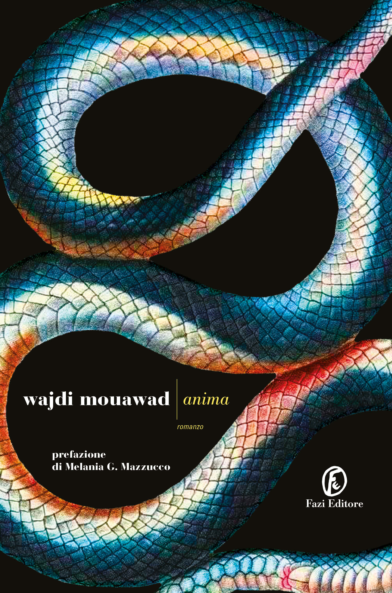

Dopo la scoperta di un crimine violento ai danni della moglie, un uomo intraprende un viaggio disperato alla ricerca della verità e, forse, della vendetta. Ciò che rende il romanzo unico è la scelta narrativa: gran parte della storia viene raccontata attraverso le voci degli animali che, di volta in volta, osservano silenziosamente la scena. Un romanzo sperimentale, viscerale, che esplora il dolore in una forma del tutto originale.
Ancora non l'ho letto, quindi per ora posso solo offrirti la copertina e la mia buona intenzione.
Ripassa più avanti.
"citazione"
Libro precedente| Torna alla home| Libro successivo
"Ogni libro finito è già un nuovo appetito"